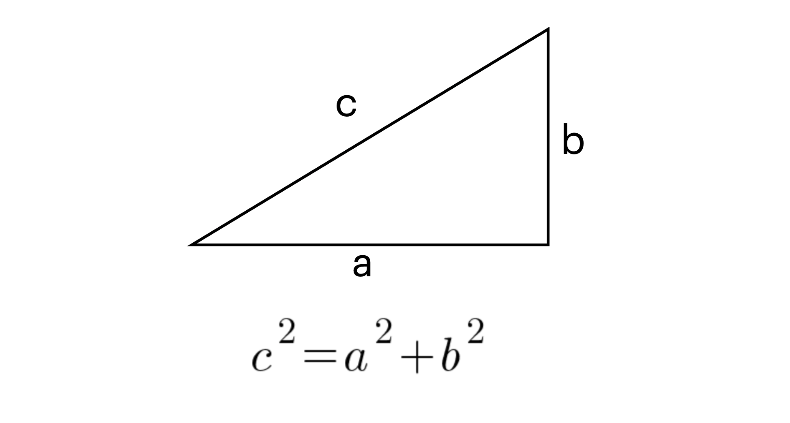

<< Home
Înainte de a face tema, consultați lecția pentru inspirație.
Tema A
-
Lui David îi plac sumele mari de bani. Pentru David o sumă mare de bani este orice depășește 100 de lei.
Pe lângă asta, David vrea să aibă doar sume rotunde. O sumă rotundă se termină tot timpul cu cifra 0.
-
Obs. Orice număr care se termină cu 0 este divizibil cu 10, adică restul împărțirii la 10 este 0 (n % 10 == 0)
- Creați un program care citește de la tastatură o sumă de bani (număr natural) și determină dacă această sumă este pe placul lui David, afișând un mesaj corespunzător.
- Exemplu: 10 -> NU (este sub 100 de lei)
- Exemplu: 564 -> NU (nu este sumă rotundă)
- Exemplu: 1000 -> DA
Tema B
-
Un triunghi se poate defini prin 3 laturi a, b și c, prin care sunt notate de fapt lungimile acestora.
- Spunem că un triunghi este dreptunghic dacă acesta are un unghi de 90°.
- Un unghi de 90° arată cam așa:
-
Orice triunghi dreptunghic respectă Teorema lui Pitagora, ilustrată mai jos:

- Teorema ne spune că a*a + b*b = c*c, adică pătratul laturii mari este egal cu suma pătratelor celorlalte laturi.
- Pătratul unui număr înseamnă numărul înmulțit cu el însuși odată. De exemplu, pătratul lui 3 este 3*3 adică 9.
-
Creați o aplicație tip consolă care citește 3 numere naturale a, b și c și verifică dacă acestea pot reprezenta laturile unui triunghi dreptunghic afișând un mesaj corespunzător.
-
Atenție! Numerele pot fi date în orice ordine, de exemplu tripletele (3, 4, 5), (4, 5, 3), (5, 3, 4), (5, 4, 3), (3, 5, 4) sunt toate laturile aceluiași triunghi dreptunghic.
- Pentru a putea determina dacă un triplet (a, b, c) este valid trebuie verificat dacă oricare din următoarele condiții este adevărată:
- a*a + b*b = c*c
- c*c + b*b = a*a
- a*a + c*c = b*b
-
Dacă niciuna din condiții nu este satisfăcută, atunci tripletul nu este valid.
- Folosiți operatorul logic || (or) pentru a verifica toate cele 3 condiții într-un singur if statement
- Exemplu: a=3, b=4, c=5 -> DA, deoarece 5*5 = 4*4 + 3*3
- Exemplu: a=4, b=5, c=3 -> DA, deoarece 5*5 = 4*4 + 3*3
- Exemplu: a=20, b=99, c=101 -> DA, deoarece 101*101 = 99*99 + 20*20
- Exemplu: a=2, b=3, c=4 -> NU, deoarece 4*4 != 2*2 + 3*3 (16 != 4 + 9)
- Pentru a putea verifica, mai jos se află câteva triplete valide:
- (3, 4, 5)
- (5, 12, 13)
- (8, 15, 17)
- (7, 24, 25)
- (20, 21, 29)
- (12, 35, 37)
- (9, 40, 41)
- (28, 45, 53)
- (11, 60, 61)
- (16, 63, 65)
- (33, 56, 65)
- (48, 55, 73)
- (13, 84, 85)
- (36, 77, 85)
- (39, 80, 89)
- (65, 72, 97)
- (119, 120, 169)
- (52, 165, 173)
- (19, 180, 181)
- (57, 176, 185)
- (104, 153, 185)
Timp de lucru: 1 săptămână
Compilator online